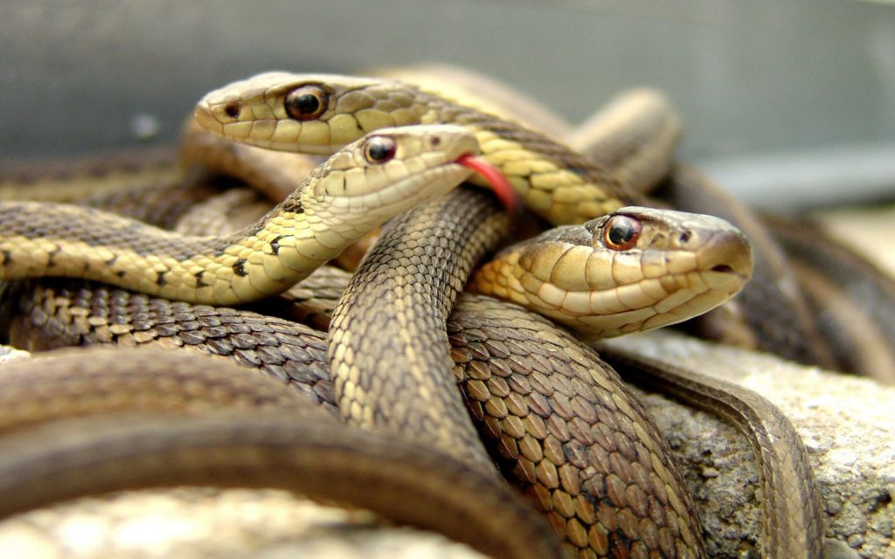
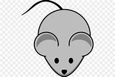
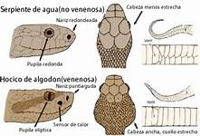

QUE SON LAS SERPIENTES
ofidios pertenecientes a la orden squamata son reptiles que carecen de extremidades y se desplazan por reptación, su cráneo esta fusionado con su mandíbula.
TIPOS DE SERPIENTES
VIBORAS
Víboras, viperinos o áspides son una subfamilia de las serpientes ellas son muy venenosas y se caracterizan por poseer un par de colmillos largos y huecos en la parte delantera de la mandíbula superior.
Estos colmillos se retraen contra el paladar cuando la boca está cerrada y cuando esta se abre, se ponen rápidamente en posición de atacar a la presa, para inyectar un veneno mortal que ataca la sangre y los tejidos sin necesidad de morderlos.
tienen una cabeza triangular y ancha y sus ojos tienen la pupila vertical. La mayoría son ovovivíparas.
CULEBRAS
Las culebras se caracterizan por ser más pequeñas que las víboras además de la diferencia que ellas atacan mordiendo.
en su mayoría son diurnos y con pupila circular mayormente. La gran mayoría son terrestres, pero también hay otros tipos. Su tamaño esta entre los 20cm a 2m dependiendo del lugar y la especie.
ALIMENTACION
Las serpientes son carnívoras ósea que consumen carne, aunque esta puede variar siendo lo más común los roedores, aves y pequeños reptiles, también pueden consumir conejos, pollos, cobayas, hámsteres, etc. Y en casos especiales huevos. No pueden consumir verduras y a menos que sean domesticas no comen animales muertos.
QUE PASA SI NO SE ALIMENTAN
las serpientes pueden comenzar a comerse a si mismas si no consiguen comida o el ambiente no es el adecuado.

CARACTERISTICAS
| Todas las serpientes poseen escamas que recubren su cuerpo estas pueden cambiar depende la especie.
Tienen una lengua bífida. Le permite procesar los olores de su ambiente
No tienen un buen sentido del oído ya que no esta tan desarrollado.
Muda de piel cuando crecen o para recuperarse de un desgaste de piel.
Son carnívoras, no consumen otra cosa que no sea carne
Son flexibles, tienen una libre articulación en sus huesos
Tienen aperturas mandibulares que le permiten ingerir animales grandes |
 |